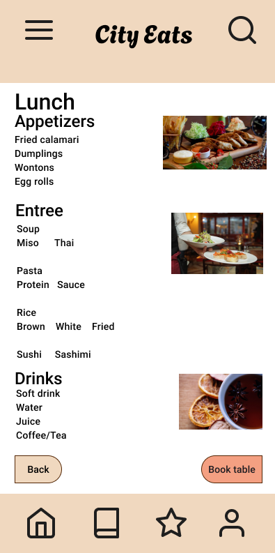
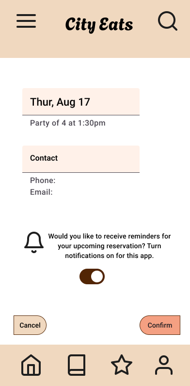

App Design
An app was designed for a restaurant that wanted its customers to be able to do certain actions online. The client and the restaurant’s name is City Eats. The app was named CityEats Time. The client wanted an app that would allow the customers to make reservations online. The customers should also be able to view the menu, book tables, and view real-time availability of the restaurant. The features that the client wanted was for there to be notifications, table preferences, and loyalty rewards. The primary target audience for the app is adults ages 35 and plus. The app was designed with the goal of carrying out 3 user tasks.
The success metrics for CityEats Time are positive feedback from the first users, high productivity ratings for each feature, and increased engagement with users returning to the app after the first 5 uses. The timeline for this app was set for about 6-8 weeks and the deadlines were met on time. The feedback received for the app was positive. Users liked the simple and organized layout because it is an app that they would not spend too much time on. The users want to come on and quickly make a reservation. Users also liked the option of receiving notifications and being able to view real-time updates on seating. Overall the app was helpful and efficient for the users.


Web Design
For this website the client wanted something a place for users to learn a new language with a community. The name of the product is Start & Speak and for this project only a website was designed but an app design would be available upon request. The primary target audience here are adults that want to learn a new language by themselves, and immigrants and ESL learners who need to learn to communicate more efficiently. The problem that the client wanted solved is adult language learners struggling to stay motivated and not enough chances to practice with other people. Other language learning products focus more on individual learning and short term goals. The users here need a way to set long term goals and opportunities to practice a language with a community online.
The website was designed with a clean and organized layout. This layout is to make it simple for the users that want to sign in and focus on learning the new language. The features that the users have enjoyed when using this product are the language, courses, and streaks pages. The users have the option of learning more than one language at a time. Before they begin their courses, they are able to take a short assessment to test prior knowledge. The results of the assessment are used to assign the courses best for each specific user. When testing this product, the users really enjoyed that they had a community here where they could practice the language.
Digital Image Design
This digital image contains simple descriptions and images for each stage in a plant’s life cycle. This resource can be used to teach elementary students how life cycles work for living beings such as plants. The purpose is for students to understand the process of a plant's life and how it is a continuous cycle. The techniques used to create this image are basic raster, advanced raster, and basic vector. The design elements seen are contrast, repetition, alignment, and proximity. The skills practiced for this project can be used to create online content for instructional design in the education environment.
This infographic can be used by teachers when they teach their students about life cycles in science class. Teachers can also use it to teach students about plants and how pollination works. The pointing arrows do not end which shows the learners that this is a continuous cycle that repeats. This can help students understand how crucial pollination is in our ecosystems. The image will be available online to be used in classrooms. The simple text and pictures should allow the learners to read it and grasp the information. Digital images are a great way for learners to work with visuals and skills that promote critical thinking. It is a way to increase engagement between learners and the content. This project shows the skills creators use to create digital images.